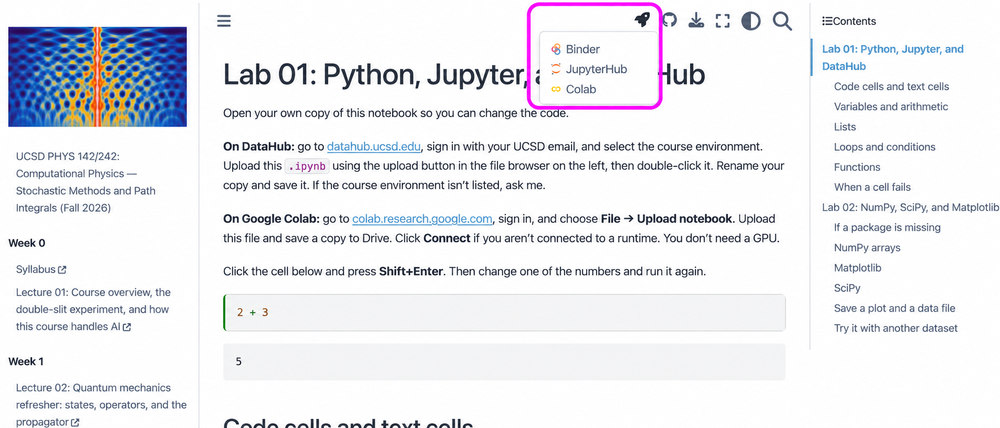

Labs 1 and 2: Python, Jupyter, DataHub, NumPy, SciPy, and Matplotlib#
Lab 01: Python, Jupyter, and DataHub#
Get your own copy running
Change a number; run it again
Open your own copy of this notebook so you can change the code.
Start from the website: open the lab page (https://jduarte.physics.ucsd.edu/phys142/labs/lab01_lab02.html), or scan this QR code. You can click it too.

On that page, click the rocket icon at the top right. The box below marks it and the menu it opens.
JupyterHub opens the notebook on UCSD DataHub. Sign in with your UCSD email and select the course environment. If it isn’t listed, ask me.
Colab opens it with your Google account. Choose File → Save a copy in Drive so you can keep your edits, then click Connect. You don’t need a GPU.

Upload it yourself instead: if you already downloaded the .ipynb, either of these works:
DataHub: go to datahub.ucsd.edu, sign in, and select the course environment. Use the upload button in the file browser on the left, then double-click the notebook. Rename your copy and save it.
Colab: go to colab.research.google.com, choose File → Upload notebook, and select the file. Save a copy to Drive and click Connect.
Click the cell below and press Shift+Enter. Then change one of the numbers and run it again.
2 + 3
Code cells and text cells#
Double-click this cell
Text cells versus code cells
The cell you just ran is a code cell. This one is Markdown: text with formatting. Double-click it to see how it’s written, then press Shift+Enter to render it again. Use the toolbar to add a cell and choose Code or Markdown. Colab calls Markdown cells Text.
Add a Markdown cell with a heading and a sentence. You can use this as a starting point:
### My notes
This is **bold**, and this is `code`.
A notebook saves the code, text, and displayed results together. The kernel is the
Python process running your code; Colab calls it a runtime. If a cell is still running,
you’ll see a spinner or [*]. The stop button interrupts it.
Variables and arithmetic#
Assignment stores a value
Print versus the last expression
= assigns a value to a name. Once we’ve defined temperature_c, we can use it in
another calculation. Here we’re converting Celsius to Fahrenheit.
Python runs each line in order. print shows a value; an expression on the last line
of a cell also displays its result.
temperature_c = 20.0
temperature_f = temperature_c * 9 / 5 + 32
print(temperature_f)
Predict it, then run it
Parentheses change what happens first
Change temperature_c to 0 and run the cell again. You should get 32.
+, -, *, and / do arithmetic. ** raises a number to a power; ^ doesn’t.
Parentheses control the order, and 1e-3 means 0.001. Try 2**3, (2 + 3) * 4,
and 2 + 3 * 4 in a new code cell.
The order you run cells matters#
Change the input; leave the output
Now rerun the second cell
Run the next two cells. Then change number in the first cell and run only that cell.
The second cell’s old output doesn’t update on its own. Run the second cell again to
use the new value.
number = 5
print(number * 2)
Old output can still be visible
Restarting clears the variables
The kernel remembers variables from cells you’ve already run. Saving the notebook doesn’t save that running Python session. After a restart, you’ll need to run the definitions again.
If you get NameError, check the spelling and whether you’ve run the cell that defines
the name. Don’t assume that visible output means the variable still exists.
Numbers, text, and comparisons#
Same digits, different types
Ask Python what type it is
Python distinguishes integers (int), decimal numbers (float), text (str), and
true/false values (bool). type tells you which one you have.
Quotation marks make text: "20" and 20 aren’t the same thing.
count = 6
reading = 20.5
sensor_name = "Sensor A"
above_limit = reading > 20
print(type(count), type(reading), type(sensor_name), type(above_limit))
A comparison gives
TrueorFalse.
print(above_limit)
Predict: what does adding text do?
print("20" + "5")
Convert first. Then add.
print(float("20") + 5)
Put values into a sentence.
print(f"{sensor_name}: {reading:.1f} degrees C")
Printing fewer decimals changes the display
Assignment and comparison use different operators
The f before the last string lets us insert values inside {...}. :.1f displays
one decimal place. It only changes how the number looks when printed.
float("20") converts text to a number, so + does addition instead of joining text.
Text after # is a comment; Python doesn’t run it.
Use == to compare values, and = to assign them. Other comparisons are !=, <,
<=, >, and >=. Try reading == 20.5 and reading < 20.
Lists#
Count indices from zero
The slice stops before that index
A list holds several values. Indexing starts at 0, so readings[0] is the first
entry. [-1] is the last. A slice like [1:4] takes entries 1, 2, and 3; the stop
index is excluded.
readings = [20.0, 21.1, 21.8, 23.2, 23.9, 25.1]
readings
First is
0. Last is-1.
print("First:", readings[0])
print("Last:", readings[-1])
Predict which entries survive the slice.
print("Slice:", readings[1:4])
Count the entries.
len(readings)
Add them up. Divide by the count.
sum(readings) / len(readings)
Six entries, indices zero through five
Rerun the definition to restore it
Try readings[:3] and readings[3:]. What happens if you ask for readings[6]?
There are six readings, but their indices are 0 through 5.
After seeing the error, remove that trial line or put # in front of it so Run All can finish.
You can replace an entry with readings[0] = 19.8, or add one with
readings.append(26.0). Try both, then rerun the cell that defines readings to restore the list.
Loops and conditions#
Trace one reading at a time
Point out the colon and indentation
A for loop repeats its indented lines for each value. Here we use an if statement
to print only the readings above 23. The colon and indentation are part of the syntax.
readings = [20.0, 21.1, 21.8, 23.2, 23.9, 25.1]
for reading in readings:
if reading > 23:
print(reading)
Flip the condition
Build a new list with
append
Change the condition to print readings at or below 23. You can add an else: at the
same indentation as if to do something when the condition is false.
Here’s a loop that builds a new list. append adds each converted value to the end.
fahrenheit_readings = []
for reading in readings:
converted = reading * 9 / 5 + 32
fahrenheit_readings.append(converted)
Look at what the loop built.
fahrenheit_readings
Where does the sequence stop?
Four values, starting at zero
Use range when you want a sequence of integers. range(4) gives 0, 1, 2, 3.
It excludes the stop value, just like a slice.
for index in range(4):
print(index, index**2)
Functions#
Define once; call with different inputs
Return a value you can reuse
We’ve written the temperature conversion twice. Put it in a function so we can call it
with different inputs. def defines the function; return gives its result back to
the code that called it.
def to_fahrenheit(celsius):
return celsius * 9 / 5 + 32
Define once. Call with different inputs.
to_fahrenheit(0)
to_fahrenheit(100)
Keep the returned value.
converted = to_fahrenheit(20)
print(converted)
Write the reverse conversion
Check both known temperatures
Write to_celsius(fahrenheit) below. Subtract 32, then multiply by 5/9. Check that
32 °F gives 0 °C and 212 °F gives 100 °C.
Use return, not just print: we want to use the result in another calculation.
# Write your to_celsius function here, then call it with 32 and 212.
One way to write it
def to_celsius(fahrenheit):
return (fahrenheit - 32) * 5 / 9
print(to_celsius(32))
print(to_celsius(212))
When a cell fails#
Read the last error line first
Check the indicated line
Read the last line of the error first, then look at the line it points to.
NameError: the name hasn’t been defined in this session, or it’s misspelled.TypeError: check what kinds of values you’re combining. Text plus a number is a common one.IndexError: the list or array doesn’t have the entry you requested.SyntaxErrororIndentationError: check brackets, colons, and indentation.
Python decimal arithmetic also has rounding error. Run the next two cells and compare the results.
0.1 + 0.2
Predict: will exact equality pass?
0.1 + 0.2 == 0.3
Small rounding differences are expected
Restart, then run from the top
Most decimals aren’t represented exactly in binary. The small difference here isn’t a
reason to round every calculation. Below we’ll use NumPy’s isclose when comparing numbers.
Save your notebook. Restart the kernel from the Kernel menu in JupyterLab, or restart the session from Runtime in Colab. Run the Lab 01 cells from the top. If a name is missing, find where it should have been defined.
Lab 02: NumPy, SciPy, and Matplotlib#
Import before using a package
Point out the short names
We’ll use a short set of temperature readings to work with arrays, make plots, and fit a line. The readings are provided below; there’s no data file to download.
First, import the packages. import numpy as np lets us use the short name np.
matplotlib.pyplot is the plotting module; we’ll call it plt.
import numpy as np
import scipy
import matplotlib.pyplot as plt
Which versions did we import?
print("NumPy:", np.__version__)
print("SciPy:", scipy.__version__)
If a package is missing#
Install into this notebook’s environment
After restarting, import again
If the import cell gives ModuleNotFoundError, the package isn’t available in that
kernel. In Colab or your own local notebook, remove the # from the line below and run it.
%pip installs into the environment used by this notebook.
If installation asks for a restart, restart the kernel. After any successful installation,
rerun the import cell above. Then put the # back so Run All doesn’t keep running
the installation command. For a different
package, replace the names with the package you need.
On DataHub, these packages should be in the course environment. If they aren’t, check which environment you selected and ask me before installing over the existing setup. For a separate custom environment, use the DataHub instructions.
Install adds the package to an environment. Import makes it available to the current Python session. You’ll import again after a restart. A new Colab runtime may also need packages installed again.
# %pip install numpy scipy matplotlib
NumPy arrays#
Same values, different containers
Predict before you run
With an array, we can apply the same calculation to every number at once. A list behaves differently: multiplying a list repeats it, while multiplying an array multiplies its values.
values_list = [1, 2, 3]
values_array = np.array(values_list)
Predict: a list times two.
values_list * 2
Same operator. Now an array.
values_array * 2
Square every entry.
values_array**2
One time, one temperature
Inspect before calculating
Here’s our example data. Each temperature goes with the time at the same index.
shape gives the size of each dimension, and dtype gives the type of the entries.
These are one-dimensional arrays with six entries each.
time_min = np.array([0, 1, 2, 3, 4, 5], dtype=float)
temperature_c = np.array([20.0, 21.1, 21.8, 23.2, 23.9, 25.1])
How many dimensions? How many entries?
temperature_c.shape
What kind of numbers are stored?
temperature_c.dtype
Convert the whole array at once.
temperature_c * 9 / 5 + 32
Reduce six readings to one mean.
np.mean(temperature_c)
Find the smallest and largest readings.
print("Minimum:", np.min(temperature_c))
print("Maximum:", np.max(temperature_c))
Remember
0.1 + 0.2? Compare with tolerance.
np.isclose(0.1 + 0.2, 0.3)
Making arrays without typing every value#
Choose a step or point count
Check whether the endpoint appears
np.arange(start, stop, step) steps through values and excludes the stop value.
np.linspace(start, stop, num) makes num evenly spaced points, including both endpoints.
Use linspace when you want control over the number of points.
np.arange(0, 6, 1)
Choose the number of points.
np.linspace(0, 5, 6)
More points. Same endpoints.
np.linspace(0, 5, 11)
Count the gaps between points
Check the first and last values
Make an array of 21 evenly spaced points from 0 to 10. What will the spacing be?
Then make the same array using arange. Remember that its stop value is excluded.
Slices and masks#
Show the mask before selecting
Keep times and temperatures paired
Array slices work like list slices. You can also select values with a condition.
temperature_c > 23 creates an array of True and False values, called a mask.
Use the same mask on both arrays to keep the times paired with their temperatures.
temperature_c[:3]
One
TrueorFalseper reading.
above_23 = temperature_c > 23
above_23
Use the same mask on both arrays.
print("Selected times:", time_min[above_23])
print("Selected temperatures:", temperature_c[above_23])
One condition, then two
Parentheses around each comparison
Change the condition to select readings at or below 23 °C. If you want two conditions,
use & with parentheses around each one, for example (temperature_c > 21) & (temperature_c < 24).
Python’s and doesn’t combine array conditions element by element.
Make a copy before changing an array#
Two names. One array.
Change one; check the other
new = old gives the same array a second name. It doesn’t copy the data.
A basic slice such as old[:3] also shares data with the original array.
Use .copy() if you want to change one without changing the other.
original = np.array([10.0, 20.0, 30.0])
same_array = original
same_array[0] = -1
print("Original after changing its other name:", original)
Now copy it. Does the original change?
separate_array = original.copy()
separate_array[0] = 99
print("Original:", original)
print("Copy:", separate_array)
Two-dimensional arrays#
Point to one row and column
Which dimension are we averaging over?
Suppose we have three runs with four readings each. We’ll store one run per row.
An array with shape (3, 4) has three rows and four columns. runs[1, 2] selects
row 1, column 2.
For this layout, axis=0 averages across runs, giving one result per time.
axis=1 averages across times, giving one result per run. Without an axis, mean
averages every entry together.
runs = np.array([
[20.0, 21.0, 22.0, 23.0],
[20.2, 21.1, 21.9, 23.2],
[19.8, 20.9, 22.1, 22.8],
])
runs
Rows first. Columns second.
runs.shape
Find row 1, column 2.
runs[1, 2]
Average down the rows. Four results.
np.mean(runs, axis=0)
Average across columns. Three results.
np.mean(runs, axis=1)
Predict each result’s length
A colon selects every entry
Print the first row with runs[0, :], then the first column with runs[:, 0].
The colon selects everything along that dimension. Check their lengths against the shape.
Matplotlib#
One marker per pair of values
Label both axes with units
Let’s plot the temperature data. plt.subplots returns a figure and an axes object.
The figure is the whole image; the axes is the plot we’re drawing on.
ax.plot(x, y, "o") draws a marker for each pair of values. Both arrays need the same
length. The labels tell us what the numbers mean and which units we’re using.
fig_data, ax_data = plt.subplots(figsize=(6, 4), constrained_layout=True)
ax_data.plot(time_min, temperature_c, "o", label="Readings")
ax_data.set_xlabel("Time (min)")
ax_data.set_ylabel("Temperature (°C)")
ax_data.set_title("Temperature readings")
ax_data.legend()
plt.show()
Connecting points does not fit them
Two series, same axes
Change "o" to "o-" and run the cell again. What changed? The line connects the
points; it doesn’t calculate a fit.
Try color="tab:orange" in ax_data.plot(...), or change the figure size.
To put two series on the same plot, call plot twice on the same axes before plt.show().
Plotting a function#
Pass an array into our function
More x values, more plotted points
Our functions can accept arrays too, as long as the operations inside work on arrays.
Here’s a line, \(y=mx+b\). slope and intercept are inputs, so we can change them when
we call it. A denser grid gives us more points to draw the line with.
def line(x, slope, intercept):
return slope * x + intercept
Choose where to evaluate the function.
time_dense = np.linspace(0, 5, 101)
Draw our guess over the data.
fig_guess, ax_guess = plt.subplots(figsize=(6, 4), constrained_layout=True)
ax_guess.plot(time_min, temperature_c, "o", label="Readings")
ax_guess.plot(time_dense, line(time_dense, 0.8, 20.0), label="Line we chose")
ax_guess.set_xlabel("Time (min)")
ax_guess.set_ylabel("Temperature (°C)")
ax_guess.legend()
plt.show()
Change slope, then intercept
Watch what each parameter changes
In the plotting cell above, change the slope and intercept to get the line closer to the points. Changing the slope tilts the line; changing the intercept shifts it up or down.
Next we’ll have SciPy choose the parameters from the data.
SciPy#
Give SciPy the function itself
It chooses the slope and intercept
SciPy provides routines for tasks such as fitting, integration, and solving equations.
We’ll try two of them. from scipy.optimize import curve_fit imports one function,
so we can call it as curve_fit(...).
curve_fit takes a function, x data, and y data. Here it chooses the slope and intercept
that minimize the sum of squared differences between the line and the readings.
Pass line, not line(...): SciPy will call the function with different parameters.
from scipy.optimize import curve_fit
parameters, covariance = curve_fit(line, time_min, temperature_c)
Read the slope and intercept.
fitted_slope, fitted_intercept = parameters
print(f"Slope: {fitted_slope:.3f} °C/min")
print(f"Intercept: {fitted_intercept:.3f} °C")
Evaluate the fitted line at our times.
line(time_min, fitted_slope, fitted_intercept)
Unpack parameters in the function’s order
Residual means data minus fitted value
parameters contains the fitted values in the order they appear after x in our function:
slope, then intercept. The assignment to two names unpacks those two values.
covariance is a separate estimate of the fitted parameters’ covariance; we don’t need
it to draw the line.
Plot the result and check the differences. Those differences are called residuals. An axes array lets us put two plots in the same figure.
fitted_values = line(time_min, fitted_slope, fitted_intercept)
residuals = temperature_c - fitted_values
residuals
Plot the fit. Look at the residuals.
fig_fit, axes = plt.subplots(2, 1, figsize=(6, 6), sharex=True, constrained_layout=True)
axes[0].plot(time_min, temperature_c, "o", label="Readings")
axes[0].plot(time_dense, line(time_dense, fitted_slope, fitted_intercept), label="Fitted line")
axes[0].set_ylabel("Temperature (°C)")
axes[0].legend()
axes[1].plot(time_min, residuals, "o")
axes[1].axhline(0, color="0.5", linestyle="--")
axes[1].set_xlabel("Time (min)")
axes[1].set_ylabel("Data − line (°C)")
plt.show()
Move one point; predict the fit
Restore the data and rerun
Increase the last temperature reading by 2 °C in the data cell. Rerun that cell, the fit, parameter unpacking, residual calculation, and this plot. Does the line move through the changed point, or does it compromise between all the points? Restore the data when you’re done, then rerun the data, fit, parameter, residual, and plot cells so the figure agrees with the values you’ll save.
sharex=True makes the two panels use the same x axis limits. axes[0] is the top
plot and axes[1] is the bottom one.
Integrating a function#
Check against an integral we know
Read both returned values
scipy.integrate.quad calculates a definite integral. For example, the area under
\(x^2\) from 0 to 1 is \(1/3\). Let’s check that numerically.
Give quad the function and the two limits. It returns the integral and an estimate
of its numerical error. That estimate doesn’t check whether you supplied the right function.
from scipy.integrate import quad
def square(x):
return x**2
Give it the function and two limits.
area, error_estimate = quad(square, 0, 1)
print("Integral:", area)
Read the numerical error estimate.
error_estimate
Check against a result we know.
print("Expected:", 1 / 3)
print("Agreement:", np.isclose(area, 1 / 3))
Change the limit and expected answer
Use help to check arguments
Change the upper limit to 2 in the integration cell. Rerun it, then replace both
1 / 3 values in the check cell with 8 / 3 and run that cell.
Then try another function whose
integral you know. You can look up the arguments with help(quad) in a new cell.
Save a plot and a data file#
Save the figure and the numbers
Same filename replaces the old file
savefig writes a figure to disk. np.savetxt writes numbers, and np.loadtxt reads
them back. Here column_stack puts the time and temperature arrays into two columns.
These files go into the notebook’s current working directory. Running the cell again replaces the files with these names.
fig_fit.savefig("temperature_fit.png", dpi=150, bbox_inches="tight")
One column per variable. Write the CSV.
table = np.column_stack((time_min, temperature_c))
np.savetxt("temperature.csv", table, delimiter=",",
header="time_min,temperature_c", comments="")
Read the file back.
loaded = np.loadtxt("temperature.csv", delimiter=",", skiprows=1)
loaded
Did the numbers survive the round trip?
np.allclose(loaded, table)
Load it back; check the columns
Download files before leaving Colab
delimiter="," separates the columns with commas. skiprows=1 skips the header when
reading the file. loaded[:, 0] gives the time column and loaded[:, 1] gives temperature.
On DataHub, the files appear in the file browser on the left. Right-click a file to download it. In Colab, open the Files panel and download them there. Files created in the Colab runtime aren’t automatically saved to Drive and disappear when that runtime is deleted.
Try it with another dataset#
Build it from the earlier pieces
Use new names for this dataset
Use the arrays below to fit and plot a line. Write the code yourself; the earlier cells have the pieces you need.
Print the array shapes and the mean temperature.
Plot the readings with axis labels and units.
Fit
linewithcurve_fit, then add the fitted line to your plot.Print the fitted slope and intercept. Save the plot with a new filename.
Keep separate names for this dataset so the earlier plots still use their original data.
new_time_min = np.array([0, 2, 4, 6, 8], dtype=float)
new_temperature_c = np.array([18.1, 18.9, 20.2, 20.8, 22.1])
# Add your analysis here.
Restart and run everything
Save and download the notebook
Save your edits, restart the kernel, and run the whole notebook from the top. In JupyterLab, use Kernel → Restart Kernel and Run All Cells. In Colab, restart the session from Runtime, then run all cells.
Fix any missing definitions, save again, and download the .ipynb. In Colab, use the
File menu; in JupyterLab, right-click the notebook in the file browser and choose Download.
This gives you a copy with the code, notes, and latest outputs together.
For syntax you don’t remember: NumPy, Matplotlib, curve_fit, quad, and notebook package installation.